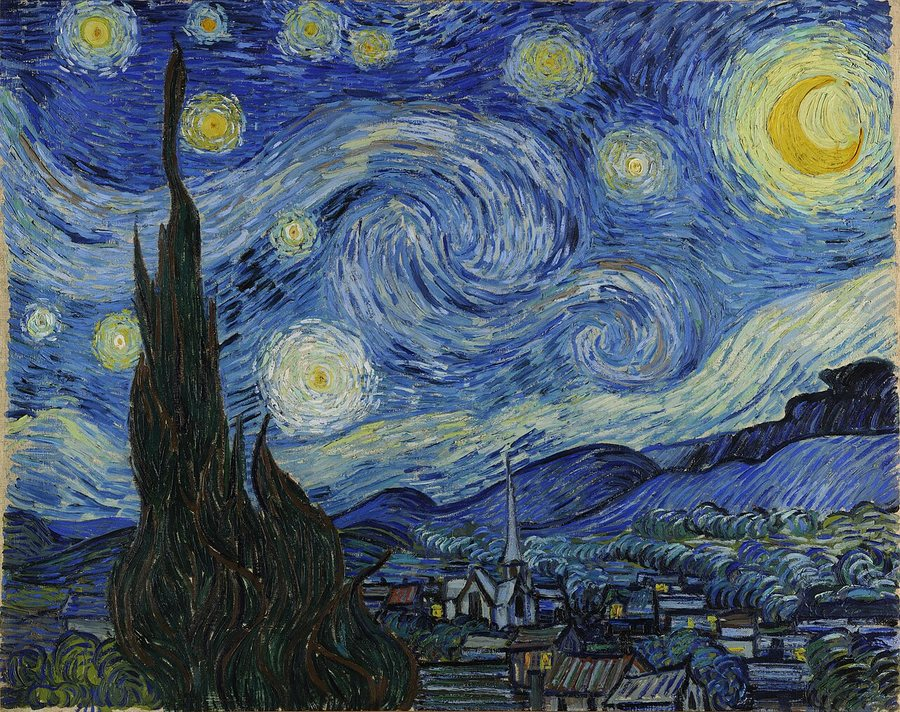
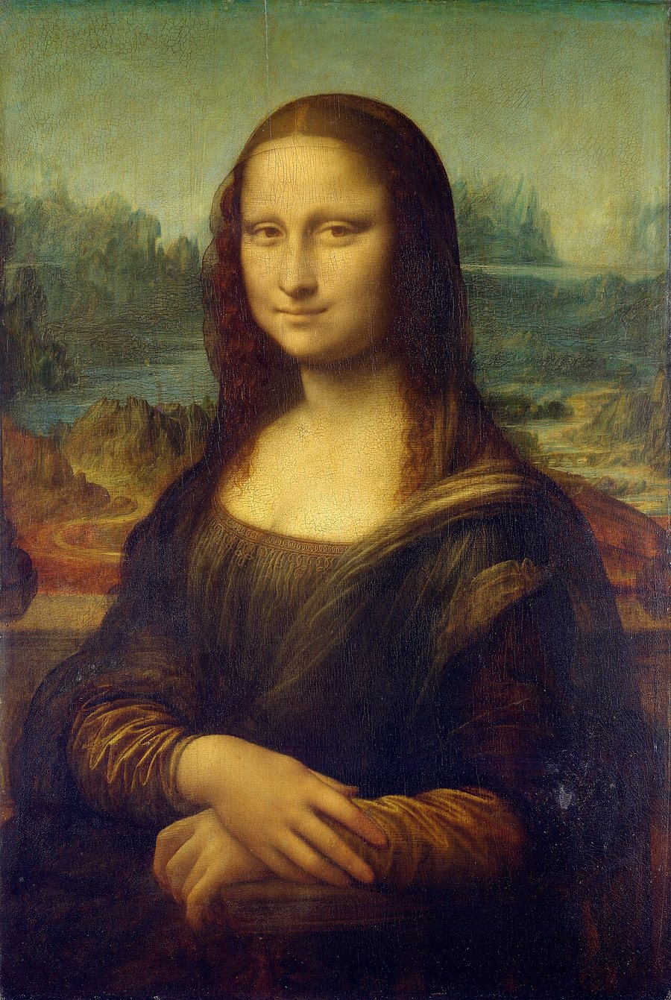
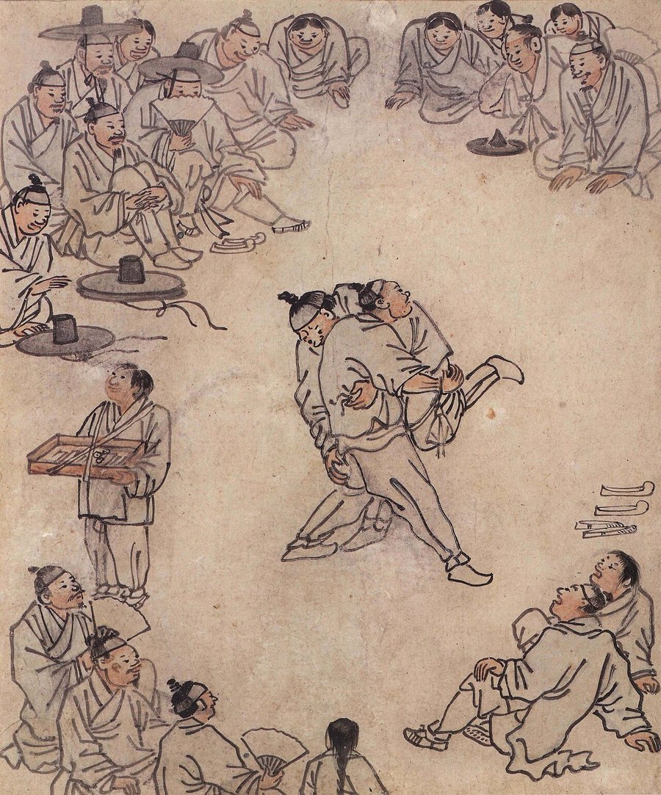

쇼팽·리스트 곡은 마음껏 치는데, 「눈이 내리네」는 왜 안 될까요? 음악·책·그림·사진의 저작권이 나라마다 몇 년 가는지, 작가가 세상을 떠나면 가족에게 어떻게 물려주고 세금은 어떻게 내는지 왕초보 눈높이로 정리했어요.
⚠️ 2026년 11월 기준 일반 정보예요. 실제 상속·세금·계약은 꼭 세무사·변호사와 상담하세요.
대부분의 나라는 작가가 세상을 떠난 해의 다음 해 1월 1일부터 70년 보호해요. 중국은 50년이고, 미국은 옛날 작품에 다른 규칙이 있어요.
막대 높이 = 작가 사망 뒤 보호하는 햇수 (개인 작가 기준)
| 나라 | 음악·책·그림·사진 (개인) | 회사 이름으로 낸 작품 | 알아 둘 점 |
|---|---|---|---|
| 🇰🇷 한국 | 사후 70년 (2013년 7월부터) | 공표 후 70년 | 1962년 이전에 세상을 떠난 작가는 이미 끝났어요(당시 50년 규칙). |
| 🇺🇸 미국 | 사후 70년 (1978년 이후 작품) | 발행 후 95년 또는 창작 후 120년 중 짧은 쪽 | 1978년 전에 발행된 작품은 발행 후 95년 → 2026년 현재 1930년 이전 발행 작품은 자유. |
| 🇯🇵 일본 | 사후 70년 (2018년 12월부터) | 공표 후 70년 | 1967년 이전에 세상을 떠난 작가는 이미 끝났어요(당시 50년 규칙). |
| 🇨🇳 중국 | 사후 50년 | 발표 후 50년 | 2021년 개정으로 사진도 사후 50년. |
| 🇫🇷 프랑스(유럽) | 사후 70년 | — | 세계대전 기간만큼 늘리는 특별 연장, '프랑스를 위해 전사한' 작가는 +30년. |
| 🌍 베른협약(최소) | 사후 50년 | — | 거의 모든 나라가 가입한 국제 약속의 최소 기준. |
• 기간은 세상을 떠난 해의 12월 31일까지 계산하고 다음 해 1월 1일부터 세어요. • 한국은 외국 작품이 그 나라에서 이미 끝났으면 한국에서도 보호하지 않아요(저작권법 제3조 4항).
작가가 여러 명이면 가장 늦게 세상을 떠난 사람 기준이에요(작곡가·작사가가 다르면 각각 따로). 살아 있는 작가는 아직 계산할 수 없어요. 특별 연장(프랑스 전쟁 연장 등)은 넣지 않은 간단 계산이에요.
| 곡 | 만든 사람 (사망) | 한국에서 |
|---|---|---|
| 엘리제를 위하여·월광 | 베토벤 (1827) | ✅ 자유 |
| 캐논 D장조 | 파헬벨 (1706) | ✅ 자유 |
| 흑건·녹턴·즉흥환상곡 | 쇼팽 (1849) | ✅ 자유 |
| 고요한 밤 거룩한 밤 | 그루버 (1863) | ✅ 자유 (곡·원어 가사) |
| 징글벨 | 피어폰트 (1893) | ✅ 자유 (곡·원어 가사) |
| Happy Birthday to You | 힐 자매 (1916·1946) | ✅ 자유 (미국은 2016년 판결로 자유) |
| 짐노페디 / 볼레로 / 랩소디 인 블루 | 사티 (1925) / 라벨 (1937) / 거슈윈 (1937) | ✅ 자유 |
| 아리랑 | 전래 민요 | ✅ 자유 |
| 애국가 | 안익태 (1965) | ✅ 2005년 유족이 나라에 기증 → 자유롭게 사용 |
| 고향의 봄 | 곡 홍난파 (1941) · 가사 이원수 (1981) | 곡 ✅ / 가사 ⛔ 2051년까지 |
| White Christmas | 어빙 벌린 (1989) | ⛔ 2059년까지 |
| Moon River | 헨리 맨시니 (1994) | ⛔ 2064년까지 |
| Last Christmas | 조지 마이클 (2016) | ⛔ 2086년까지 |
| Tombe la neige (눈이 내리네) | 아다모 (생존) | ⛔ 보호 중 |
| All I Want for Christmas Is You / Let It Go / 강남스타일 | 작곡가 생존 | ⛔ 보호 중 |
쇼팽 곡은 자유지만 유명 피아니스트의 연주 녹음은 그 연주자·음반사의 권리(저작인접권, 한국은 발행 후 70년)가 있어요. 유튜브에 남의 녹음을 쓰면 저작권 신고가 와요. 내가 직접 친 연주나 공개 라이선스 MIDI·악보를 쓰세요. 요즘 새로 편집한 악보도 편집자 권리가 있을 수 있어 오래된 판(공개 저작물)이 안전해요.



사진 출처: Wikimedia Commons (Public domain)
| 작가 (사망) | 한국에서 | 재미있는 점 |
|---|---|---|
| 김소월·윤동주·이상 시 (1934·1945·1937) | ✅ 자유 | 교과서 속 시도 이제 모두의 것 |
| 이중섭 그림 (1956) | ✅ 자유 | 1962년 이전 사망 → 50년 규칙으로 이미 끝 |
| 박수근 그림 (1965) | ⛔ 2035년까지 | 9년 차이로 이중섭과 운명이 갈렸어요 |
| 피카소 그림 (1973) | ⛔ 2043년까지 | 작품 사진을 마음대로 쓰면 안 돼요 |
| 생텍쥐페리 「어린 왕자」 (1944) | ✅ 자유 | 프랑스는 전사 작가 연장으로 2032년까지 보호 — 나라마다 달라요! |
유언장 만들기, 상속인 여럿이 나눌 때 협의서, 다툼 조정·소송, 방송사·출판사와 사용 계약, 해외 저작권 관리.
저작권 값 매기기(앞으로 들어올 돈을 추정), 상속세·증여세 신고, 나눠 내기(연부연납) 신청, 매년 저작권료 소득세 신고.
음악은 한국음악저작권협회(KOMCA) 등에 상속인으로 바꾸면 저작권료가 상속인 통장으로 와요. 한국저작권위원회에 변동 등록도 할 수 있어요. 무료 상담 1800-5455.
증여받은 달 말일부터 3개월 안에 증여세 신고. 성인 자녀는 10년 동안 5천만 원까지 공제(현행).
| 과세표준(공제 뒤 금액) | 세율 |
|---|---|
| 1억 원 이하 | 10% |
| 5억 원 이하 | 20% |
| 10억 원 이하 | 30% |
| 30억 원 이하 | 40% |
| 30억 원 초과 | 50% |
현행 상속세·증여세 세율(누진). 일괄공제 5억 원, 배우자 공제(최소 5억 원) 등 공제가 먼저 빠져요. 개정 논의가 계속되니 신고 전 세무사 확인 필수. 상속세가 2천만 원을 넘으면 최장 10년 나눠 내기(연부연납)를 신청할 수 있어요.
세금은 앞으로 벌 돈을 미리 추정해 매기는데, 노래 인기가 식으면 실제 수입이 덜 들어와요. 세금은 6개월 안에 현금으로 내야 하는데 저작권료는 조금씩 들어와서 당장 돈이 모자랄 수도 있어요. 남은 보호기간이 해마다 줄어드는 것도 가치를 떨어뜨려요.
드라마·광고·유튜브에서 옛 노래가 다시 뜨면 예상보다 많이 들어와요. 해외 스트리밍 수입이 늘기도 해요(해외 저작권 단체 등록이 중요). 다만 늘어난 수입에는 매년 소득세가 따로 붙어요.
| 나라 | 상속세 |
|---|---|
| 🇰🇷 한국 | 있음 (10~50%) |
| 🇯🇵 일본 | 있음 (최고 55%) |
| 🇫🇷 프랑스 | 있음 (자녀 최고 45%) |
| 🇺🇸 미국 | 연방 상속세 있지만 면제 한도가 매우 커서 대부분 가정은 내지 않음 (일부 주는 따로) |
| 🇨🇳 중국 | 상속세 없음 |